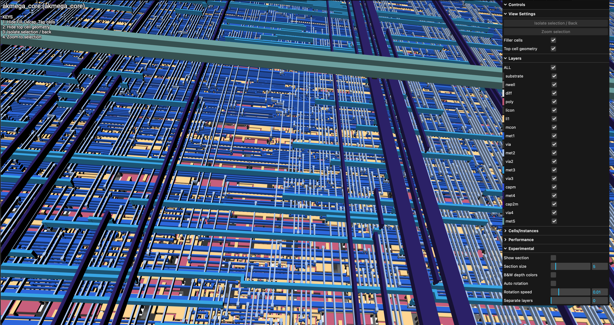

An ATmega-compatible 8-bit core taken from RTL to physical layout on Skywater 130nm. A bucket-list project to see how far one person and open-source tools can get.
View on GitHub →Could I take a complete microcontroller core from SystemVerilog all the way to a finished GDSII layout using only open-source tools? I'd tried something similar before with a RISC-V design, but that project failed at the placement stage—too much physical complexity for the automated flow.
So I scaled down. The ATmega architecture is one of the most widely-deployed 8-bit ISAs in the world, but as my friend Mike Matera pointed out, it's surprisingly poorly documented from an ISA perspective compared to modern standards. That gap made it an interesting target.
The ATmega toolchain visibility is often lacking, making it significantly tougher to bootstrap a custom core from scratch.
— Mike Matera, on the ATmega documentation gap
The entire core was developed through an interactive session with an LLM—an exploration of what's currently possible at the boundary of AI-assisted hardware engineering.
The full flow compiles a C program (a Fibonacci sequence test), simulates the RTL against a behavioral golden model, and then pushes the design through synthesis, placement, routing, and signoff.
# Compile firmware, simulate RTL, verify against golden model $ make verify # Run the full ASIC flow (requires Docker + OpenLane) $ make gds